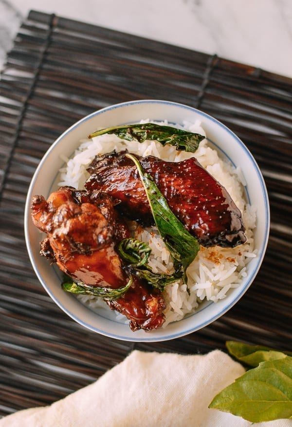

Three Cup Chicken (San-Bei-Ji)
Hardware
- Wok
- Stong Knife or cleaver
- Measuring cup
- Spatula or turner
Software
- 15 ml sesame oil
- 30 ml vegetable oil
- One thumb ginger, sliced thinly
- 5 gloves of garlic
- 1kg chicken wings cut at the joint. Wingtips should be preserved for stock.
- 60 ml warm water
- (Optional) 60 ml ricewine
- 10 ml dark soysauce
- (Optional) 25 ml light soy sauce
- 5-10g white sugar
- A handful of Thai Basil leaves
- two scallions, cut into 2mm pieces
Program
- Start by putting the sesame oil, vegetable oil, ginger, garlic, and red chili into your wok over medium heat. Let the aromatics infuse the oil for a couple minutes.
- Then turn up the heat to high, and add the chicken wings to the wok all in one layer. Sear the chicken until golden brown on both sides. Then add 1/4 cup warm water, ¼ cup Shaoxing wine, dark soy sauce (2-5 teaspoons, depending on how dark you’d like the dish to be), 1 1/2 tablespoons light soy sauce, and 2 teaspoons sugar.
- Stir and cover the wok. Turn the heat down to medium and simmer for 15 minutes to cook the chicken through (cook for 20 minutes if you want the chicken to be more tender).
- Then remove the cover and turn up the heat to rapidly reduce the sauce for a few minutes until it clings to the chicken and gives it a rich, dark color. Make sure to stir the chicken during this process to prevent burning.
- Throw in your Thai basil and/or scallions and fry another minute until it’s wilted. Serve over rice!
Main Page